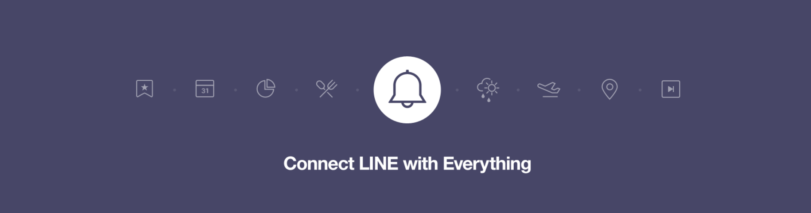
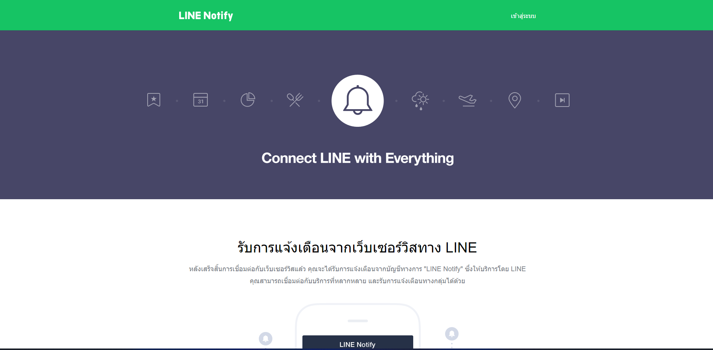
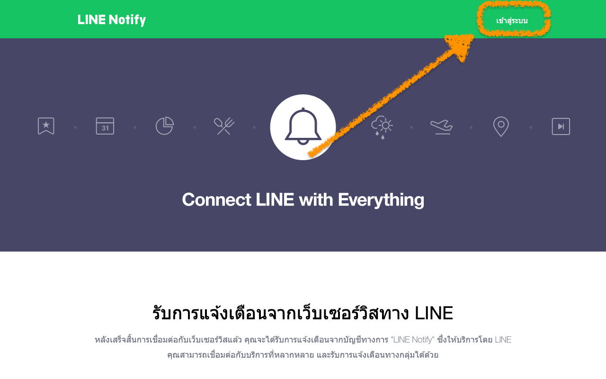
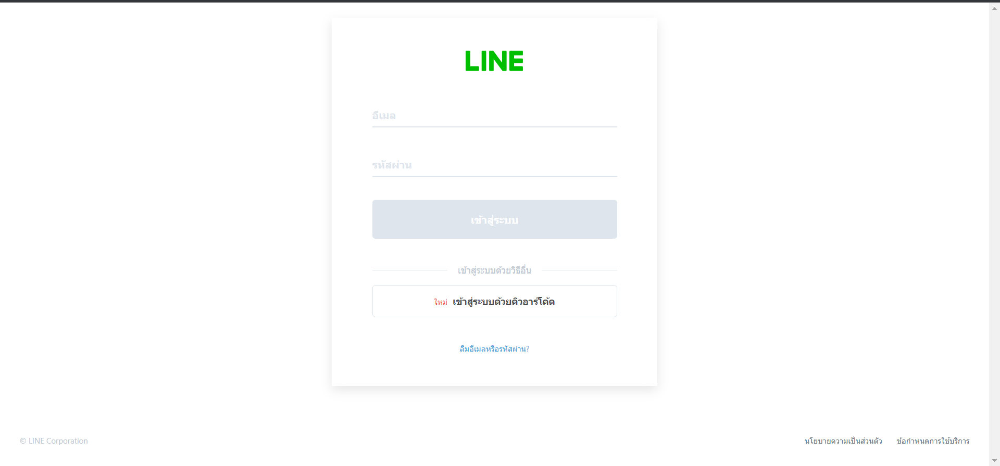
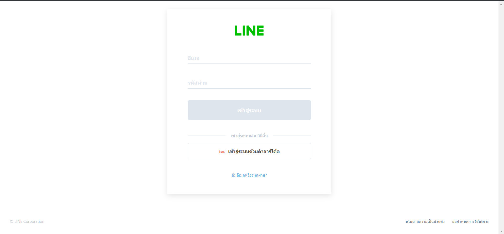
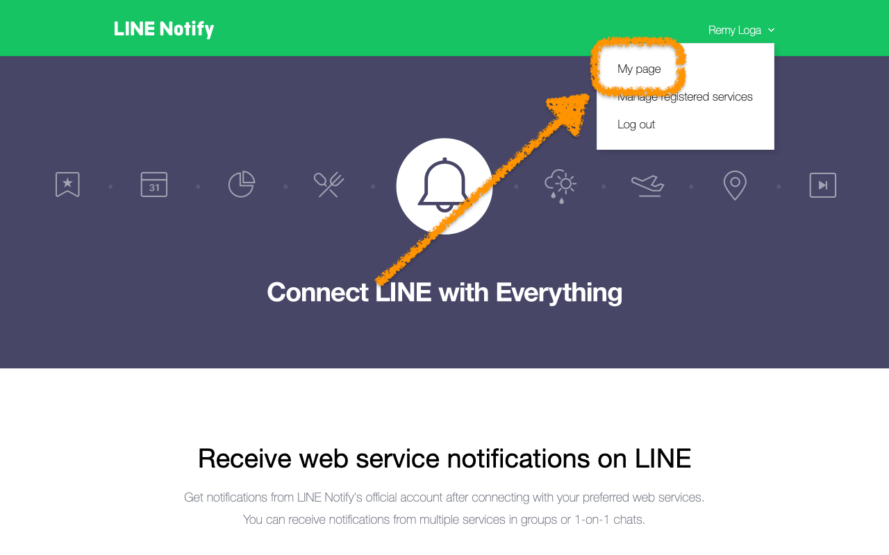
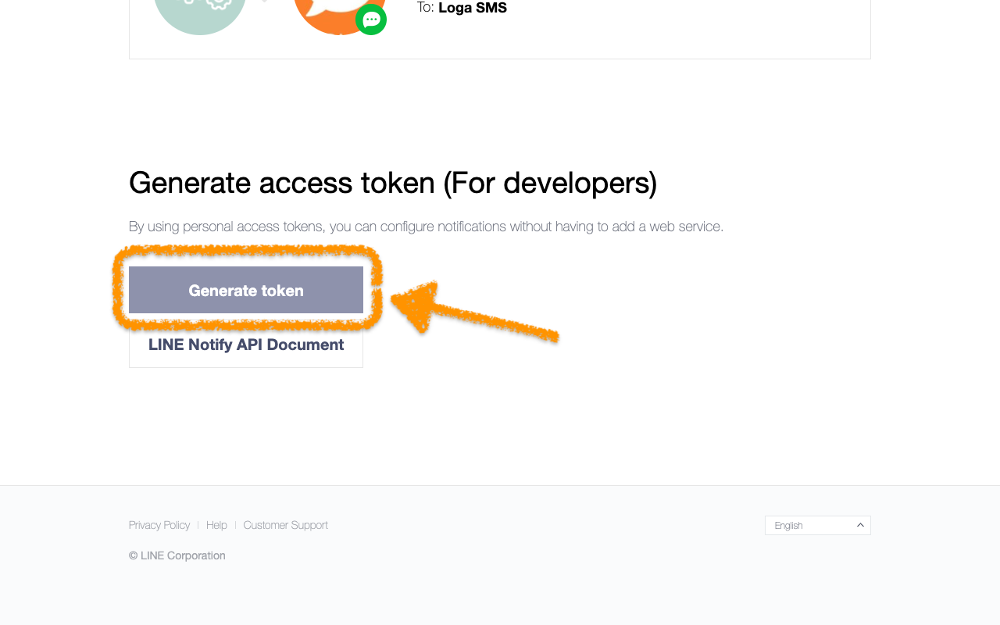
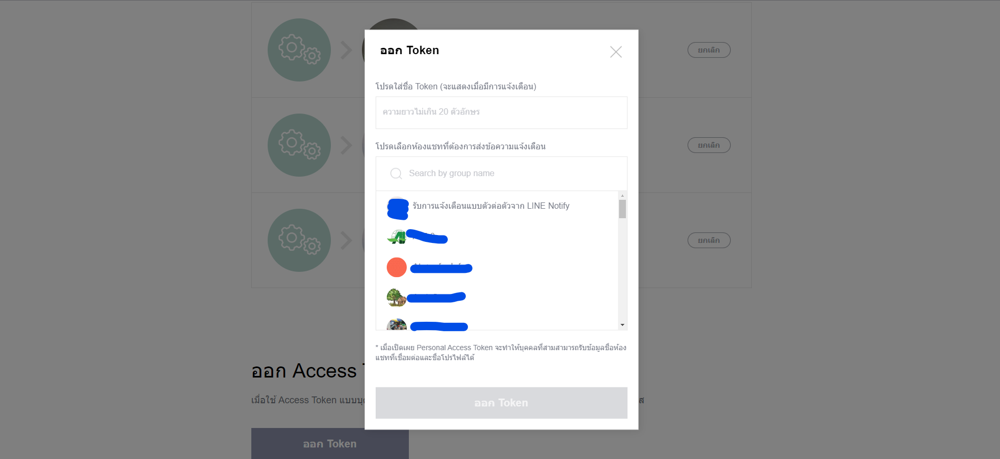
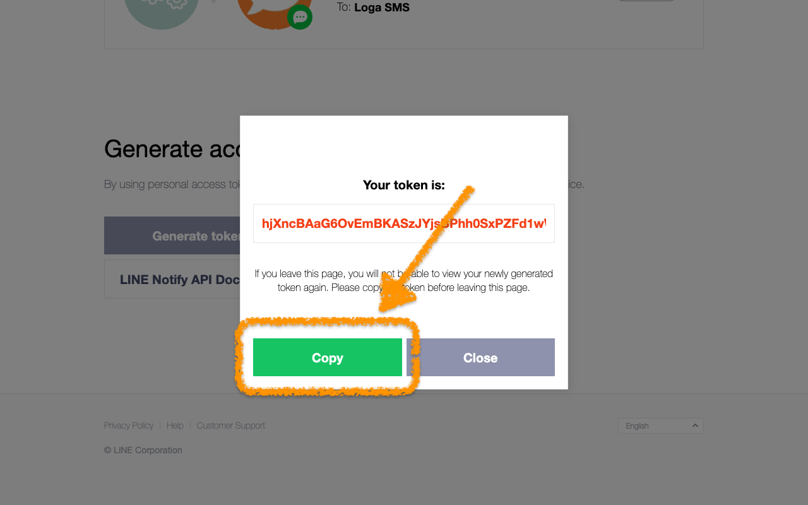
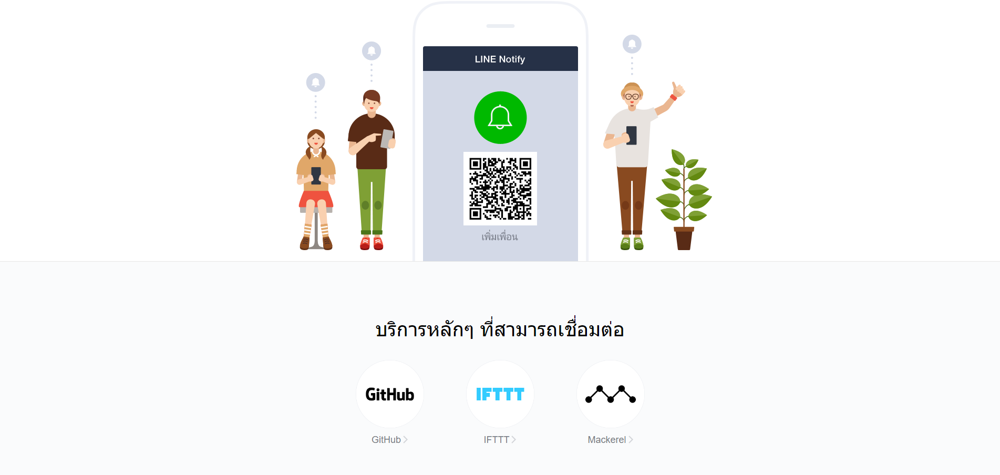

- เลือกแชทที่ต้องการส่งข้อความแจ้งเตือน โดยสามารเลือกแบบส่วนตัวจาก
LINE Notify คืออะไร?
LINE คือ แอปพลิเคชันที่เติบโตมาจากการเป็นแอปสำหรับส่งข้อความคุยกัน แม้ปัจจุบันจะสามารถควบรวมบริการต่างๆ ทำให้ทำอย่างอื่นได้อีกมากมาย แค่บริการหลักก็ยังเป็นเครื่องมือสำหรับสื่อสารส่งข้อความกันระหว่างผู้ใช้ ซึ่ง LINE Notify เป็นบริการของ LINE ให้เราใช้ส่งข้อความเพื่อแจ้งเตือนเหมือนเป็นบอทส่วนตัว
ระบบแจ้งเตือน Line Notify ช่วยให้เจ้าของร้านได้รับทุกการแจ้งเตือนผ่านระบบ Line Notify สามารถแจ้งเตือนได้ตั้งแต่รายการสั่งซื้อ รายการชำระเงินของลูกค้า ไปจนถึงการแจ้งเตือนสต็อคสินค้าเมื่อถึงจุด Low Stock หรือสินค้านั้นมีการ Out of Stock อีกทั้งข้อความที่ติดต่อผ่านเข้ามาทางเว็บไซต์ ระบบ Line Notify ก็จะแจ้งเตือนให้ทันที
ขั้นตอนการขอ Token จาก Line notify เพื่อรับการแจ้งเตือนต่างๆ จาก LINE นิยมนำมาใช้อย่างแพร่หลายกับวงการ Arduino และ NodeMCU โดยนำมาเป็นช่องทางการแจ้งเตือน Error ต่างๆของระบบ หรือส่ง ข้อความ รูปภาพ ไปยังไลน์ (LINE)
ขั้นตอน การขอ Token จาก Line Notify เพื่อรับการแจ้งเตือนจากระบบ Smart Green House
การรับการแจ้งเตือนผ่าน Line Notify ของระบบ Smart Green House มีกระบวนกการสร้าง Token ดังนี้
ขั้นตอนที่ 1 เข้าเว็บไซต์์ https://notify-bot.line.me/th/ เพื่อไปยังหน้าเว็บของ LINE Nofity

ขั้นตอนที่ 2 Login ด้วยบัญชี LINE ด้วย Email หรือ Login ด้วยคิวอาร์โค้ด



ขั้นตอนที่ 3 เลือก หน้าของฉัน (My page) จากเมนูด้านบนขวา

ขั้นตอนที่ 4 ในหน้าของฉัน (My page) เลื่อนลงมาล่าสุดของจอ กดปุ่ม แแก Token (Generate Token) จะมีหน้าจอให้เลือกกลุ่มและตั้งชื่อ

- กำหนดชื่อ Token เวลาแสดงแจ้งเตือน
- กำหนดชื่อ Token เวลาแสดงแจ้งเตือน
- เลือกแชทที่ต้องการส่งข้อความแจ้งเตือน โดยสามารเลือกแบบส่วนตัวจาก
1. รับการแจ้งเตือนแบบตัวต่อตัวจาก LINE Notify
2. เลือกกลุ่ม line ที่ต้องการส่งการแจ้งเตือน
หากเลือกเป็นกลุ่ม line หลังจากออก Token แล้ว ให้ดึง Line Notify เข้ากลุ่มดังกล่าวด้วย

ขั้นตอนที่ 5 กด แแก Token (Generate Token) หน้าจอจะแสดง token
กด คัดลอก Token เอาไว้ และนำไปกรอกที่เว็บไซต์ Smart Green House หน้าบัญชี -> ข้อมูลผู้ใช้งาน

ขั้นตอนที่ 6 กรณี เลือกแชทเป็นแบบกลุ่ม ขั้นตอนที่ 4 ให้ไปยังกลุ่ม line ดังกล่าวแล้ว เพิ่ม Line Notify เข้ากลุ่ม
